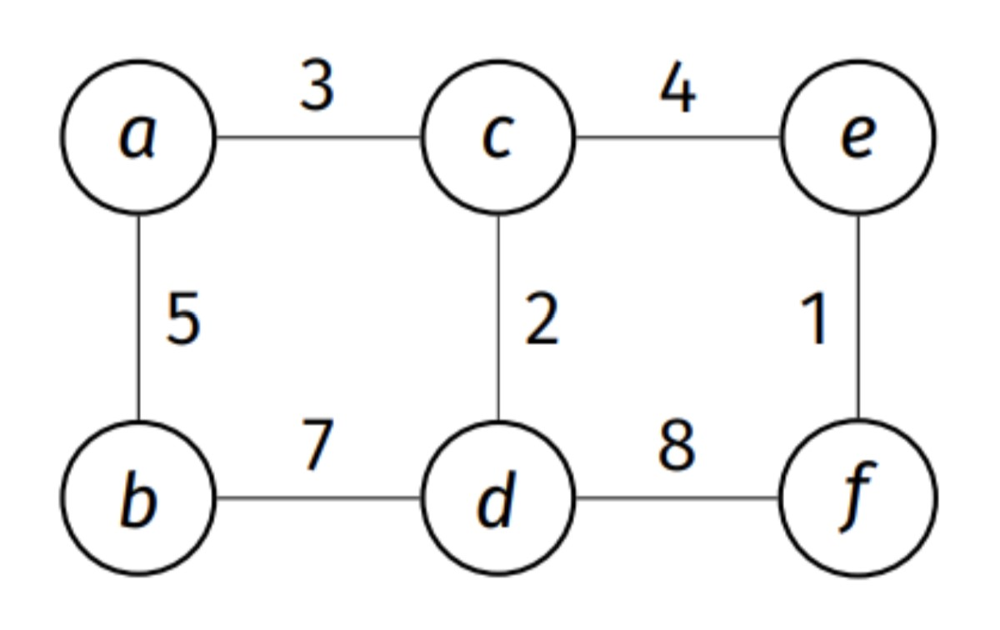

Tags: lecture-16, minimum spanning trees
Let \(G\) be a connected graph with 9 nodes. As you know, there may be multiple minimum spanning trees of this graph. How many edges must be included in any given minimum spanning tree?
Answer: 8. Every spanning tree of a graph with \(|V|\) nodes is a tree on those \(|V|\) nodes, so it has exactly \(|V| - 1 = 8\) edges.
Tags: lecture-16, graph theory
Let \(G = (V,E)\) be a connected, undirected graph with \(|E| = |V| - 1\). Suppose \(u\) and \(v\) are both nodes in \(G\). True or False: there can be more than one simple path from \(u\) to \(v\).
False.
A connected graph with \(|E| = |V| - 1\) is a tree, so it has no cycles. If there were two different simple paths from \(u\) to \(v\), we could put them together to get a cycle.
Tags: lecture-16, minimum spanning trees
Consider the following weighted graph:

True or false: the edge \((a, b)\) is in every minimum spanning tree of the graph.
True. Node \(b\) has only two edges: \((a, b)\) with weight 5 and \((b, d)\) with weight 7. A spanning tree must include at least one of them. If a spanning tree used \((b, d)\) but not \((a, b)\), adding \((a, b)\) would create a cycle containing \((b, d)\); removing \((b, d)\) gives another spanning tree with smaller total weight. So every minimum spanning tree contains \((a, b)\).
Tags: lecture-16, minimum spanning trees, shortest paths
Suppose there is a unique shortest path \(p\) between nodes \(u\) and \(v\) in a graph \(G\) and that there is a unique minimum spanning tree \(T\) of \(G\). True or false: the path between \(u\) and \(v\) in the MST \(T\) must be the same as the path \(p\).
False. Consider a triangle on nodes \(u\), \(v\), and \(w\) with edge weights \(w(u, v) = 3\), \(w(u, w) = 2\), and \(w(w, v) = 2\). The unique MST uses edges \((u, w)\) and \((w, v)\), so the path from \(u\) to \(v\) in the MST has length 4. But the unique shortest path from \(u\) to \(v\) is the single edge \((u, v)\), with length 3.